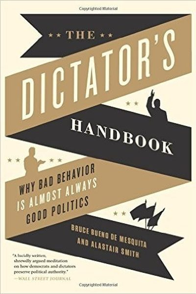

Library › Power & Strategy
The Dictator's Handbook — Summary & Key Lessons

Why bad behavior is almost always good politics — the cold logic of power, from dictators to boardrooms.
📖 OPEN THE FULL INTERACTIVE BREAKDOWN →🌐 Read it in Hindi, Hinglish, Gujarati, Tamil & 22 more languages — free, with audio.
💡 The Big Idea
Two political scientists analyzed 2,600 years of leadership and found one law underneath it all: leaders do whatever keeps their 'winning coalition' — the minimum number of supporters whose backing they need — happy. Dictators bribe a few; democrats serve many. Once you see the selectorate logic, everything clicks: why autocrats steal, why public companies flatter big shareholders, why bosses promote loyalists over talent.
🧠 The 6 Key Lessons
Lesson 1: It's All About the Selectorate
The Selectorate Theory
Every leader — dictator, CEO, club president — survives by pleasing a specific group: the selectorate (those with a say) and the winning coalition (the minimum number whose support is essential). Leaders don't serve 'the people'; they serve the coalition that keeps them in power. Change the coalition math and behavior changes — which is why democracies behave better than autocracies.
📖 Example: A dictator needs support from a small coalition — a few generals — so he showers them with private riches. A democratic leader needs millions of votes, so he provides public goods (roads, schools) that benefit everyone. Same job, different coalition size,… Read the full example →
⚡ Do this: Map your own 'coalition': the minimum number of people whose support you truly need at work or in life. Serve them well — and know exactly who they are.
Lesson 2: Keep the Coalition Small
Coalition Math
The smaller the winning coalition, the cheaper it is to keep it loyal — but the more you must bribe each member privately, and the more dangerous disloyalty becomes. Larger coalitions force leaders to provide broad public goods but make loyalty cheaper to enforce. Every leader constantly trades off coalition size against loyalty cost.
📖 Example: North Korea's tiny coalition is kept loyal with luxury goods and elite perks while the public starves; a democracy must fund schools for everyone. When a company is run for three founders instead of a thousand shareholders, expect very different decisions. Read the full example →
⚡ Do this: Audit your organization: whose support do you actually need, and what are you 'paying' them? If you're serving people outside your coalition, you're subsidizing strangers.
Lesson 3: Money Is the Mother's Milk of Politics
Revenue and Expenditure
Leaders need resources — and how they get them shapes how they govern. When revenue comes from a few easily-taxed sources (oil, foreign aid, a single client), leaders don't need broad support and can ignore the public. When revenue must come from many citizens' taxes, leaders must provide services in return. Follow the money and you can predict the politics.
📖 Example: Oil-rich autocracies fund their regimes from one tap and never need popular approval; the same logic explains why a startup with one huge client can ignore its users until the client leaves, while a subscription business with 10,000 small customers must… Read the full example →
⚡ Do this: Count your revenue streams: if one source funds you, you are its hostage. Diversify the money and you free your decisions.
Lesson 4: Loyalty Beats Competence
The Loyalty Trap
Leaders choose coalition members based on loyalty first, competence second — because incompetents are easier to control. This is why dictators appoint family and sycophants, and why CEOs often surround themselves with 'yes men.' The chilling corollary: organizations that prioritize loyalty over competence decline — until a crisis forces a change.
📖 Example: Stalin's inner circle was loyal but catastrophically incompetent, nearly destroying the Soviet army in 1941; the US Army, by contrast, promoted competence (Eisenhower over his seniors) — a coalition choice that helped win the war. Read the full example →
⚡ Do this: Check your team and advisors: would you keep them if they disagreed with you? If you only keep people who agree, you've built a loyalty trap — fix it by promoting one competent challenger.
Lesson 5: Your Own Life Is a Selectorate Game
Applying the Theory
The book's most useful twist: you are a leader too — of your career, your family, your projects. The people whose support you need will shape your decisions whether you notice or not. Design your life so your 'coalition' rewards behavior you're proud of: choose bosses, clients, partners and friends whose values pull you toward your best self.
📖 Example: An employee whose bonus depends on one difficult client will defend that client at any cost; a founder whose metrics are user happiness builds for users. Your incentive structure is your destiny — audit it. Read the full example →
⚡ Do this: Write down who controls your rewards (boss, client, audience, spouse). Ask: 'Do their incentives align with my best self?' If not, change the game or change the players.
Lesson 6: Power Is Held by Whoever Controls the Basics
Coming to Power
The book's cold lens: leaders stay in power not by popularity but by controlling the essentials — money, loyalty of the inner circle, information and the means of coercion. Institutions that distribute these checks prevent tyranny; those that concentrate them enable it. Understand the incentives of whoever holds the levers.
📖 Example: Dictators who lose control of the military or the treasury rarely survive the year, regardless of public support; democracies are stable because no single person controls all the levers. The analysis applies to organizations too: whoever controls the budget… Read the full example →
⚡ Do this: Map who actually controls the budget, information and hiring in your organization — and audit whether that concentration serves good decisions.
✅ 5-Step Action Plan
- Name your winning coalition — the minimum support you need.
- Check what you're 'paying' your coalition and whether it's sustainable.
- Count your revenue streams; diversify any single-source dependency.
- Promote one competent challenger to break your loyalty trap.
- Audit your incentive structure: are your rewards pulling you toward your best self?
⚠️ When This Doesn't Work
Bueno de Mesquita's 'all leaders are self-interested; power is staying in power' is chillingly accurate — and Qin Shi Huang was the perfect dictator: unified China, crushed rivals, built the Great Wall, and engineered a dynasty that lasted fifteen years after his death, because his terror-system had no answer for the one thing he couldn't control: his own mortality. The theory explains tyrants perfectly and explains almost nothing else. If you read it as the whole truth about leadership, you'll miss the half of the story where trust, loyalty and genuine service outlast raw power.
💀 The Graveyard Proves It
⚗️ Qin Shi Huang — The Emperor Who Drank Immortality to Death. Burn: His life, at 49. Read the full case study →
💬 Best Quotes from The Dictator's Handbook
- “Power is not about how many people you know — it's about how many people you need.”
- “Money is the mother's milk of politics.”
- “If you want to understand why leaders behave badly, look at who they must please to stay in power.”
Interactive version: mark lessons as read, listen in your language, share quote cards.